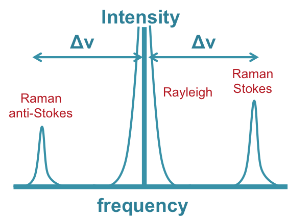

Raman spectroscopy is a molecular characterization technique. It is based on inelastic scattering of incident monochromatic light with a material system. Upon interaction with matter, photons can be absorbed to a higher virtual level if it is instantly emitted elastically back to initial level this is called Rayleigh scattering (Fig. Raman3). The energy shift from incident light due to inelestic scattering is called Raman shift and it has two symmetrical modes, Stokes and Anti Stokes scattering(Fig.Raman3). In Stokes-Raman scattering the photons emitted usually have a lower energy and frequency than the photons absorbed. This scattering also refereed as creation of phonons. The reverse processes in which a phonon is annihilated with incident photons called Anti-Stokes shift. In this case the emitted photons have a higher energy and frequency than the photons absorbed. These band, called Raman shift, arise from the change in the polarizability of the material system. Rising bands carry information about specific molecular vibration, rotation and other low-frequency modes (Fig.Raman1). Today, Raman scattering is a well know widely used characterization technique due to its easy sample preparation and ability to characterize samples in gas, liquid and solid phases of materials. It is non destructive and has high resolution even with small amount of sample.
In our group we have two different Raman systems. One is Horriba and other is Renishaw system. In addition to traditional room temperature Raman in our system we are able to
- Have temperature control from 77K to 873 K
- Apply bias and see electrical input effects
- Change laser to ultraviolet, blue or red and able to switch to resonant Raman
- Go to 10 cm-1 that allows us to see low frequency vibration modes and secondary shearing, breathing modes in 2D systems